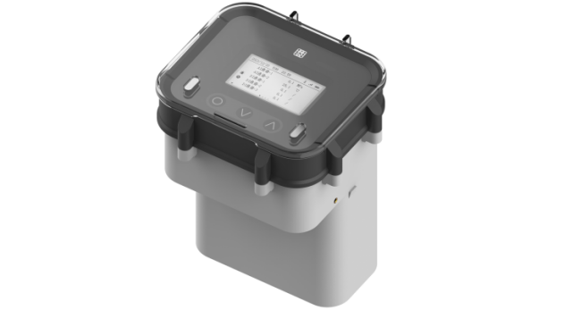

WE-T800 Multi-Function Field MonitorWE-T800 多功能现场监测仪
A sealed IP68 field unit for distributed monitoring: 4G backhaul, RS485 Modbus-RTU, two 4–20 mA analog channels, two digital inputs, and flexible power from internal Li-ion packs or 9–30 V DC. Built for water utilities, environmental sites, and industrial IoT where reliability matters.一款密封IP68现场监测单元，适用于分布式监控：4G回传、RS485 Modbus-RTU、两路4-20 mA模拟通道、两路数字输入，内置锂电池或9-30V DC灵活供电。专为水务、环保和工业物联网等高可靠性场景设计。
English PDF manual. For technical support or customized OEM versions, email us from Contact Information.如需技术支持或定制OEM版本，请通过联系方式发送邮件。 for technical documentation

Key Highlights产品亮点
Precision monitoring meets rugged industrial design.精准监测与工业级设计相结合。
4G & Cloud-ready4G与云就绪
LTE FDD/TDD bands supported; MQTT, HTTP, and WEST cloud protocols; 3-year cellular data plan option.支持LTE FDD/TDD频段；MQTT、HTTP和WEST云协议；可选3年蜂窝数据套餐。
Field I/O现场I/O接口
1× RS485 (4800–115200 bps, Modbus-RTU), 2× AI (4–20 mA), 2× DI (switch or pulse counting), 2× configurable DC outputs.1路RS485（4800-115200 bps，Modbus-RTU），2路AI（4-20 mA），2路DI（开关或脉冲计数），2路可配置DC输出。
Rugged & Readable坚固与清晰
IP68 enclosure; 60×32 mm LCD with LED indicators and keypad for local readings and alarms.IP68防护外壳；60x32 mm LCD显示屏，LED指示灯和键盘，支持本地读数与报警。
Dual Power双供电
Internal Li-ion options (114000 or 228000 mAh) with automatic handover to 9–30 V DC external supply.内置锂电池可选（114000或228000 mAh），自动切换至9-30V DC外部供电。
Mobile Supervision移动监控
Bluetooth for local configuration; companion app for remote visibility.蓝牙本地配置；配套APP远程查看。
Configurable Timing可配置定时
Sampling and upload periods configurable from 10 s to 18 h to match battery life and network duty cycle.采样和上传周期可配置10秒至18小时，匹配电池寿命和网络占空比。
Product Gallery
Detailed views (Scroll thumbnails to browse).
Specifications技术参数
Technical parameters based on the product manual.基于产品手册的技术参数。
| Model型号 | WE-T800 multi-function monitor / RTU-style field unitWE-T800 多功能监测仪/RTU式现场单元 |
|---|---|
| Connectivity通信方式 | 4G LTE; SMA female antenna; MQTT, HTTP, WEST cloud4G LTE；SMA母头天线；MQTT、HTTP、WEST云 |
| LTE BandsLTE频段 | LTE FDD B1/3/5/8; LTE TDD B34/38/39/40/41LTE FDD B1/3/5/8；LTE TDD B34/38/39/40/41 |
| RS485RS485 | 1 port, 4800–115200 bps, Modbus-RTU1路，4800-115200 bps，Modbus-RTU |
| Analog Inputs模拟量输入 | 2× AI, 4–20 mA2路AI，4-20 mA |
| Digital Inputs数字量输入 | 2× DI — dry contact / pulse counting2路DI — 干接点/脉冲计数 |
| Sensor Excitation传感器供电 | 2× DC output ports, 3.6 V / 5 V / 12 V selectable2路DC输出端口，可选3.6V/5V/12V |
| Sampling / Upload采样/上传 | Configurable 10 s – 18 h可配置10秒-18小时 |
| Power — Battery电池供电 | Internal Li-ion: 114000 mAh or 228000 mAh内置锂电池：114000 mAh或228000 mAh |
| Power — External外部供电 | 9–30 V DC (typical 24 V), auto-changeover with battery9-30V DC（典型24V），自动切换 |
| Operating Temp工作温度 | −20°C to +70°C-20°C至+70°C |
| Enclosure防护等级 | Fully sealed, IP68; ABS/PC housing全密封，IP68；ABS/PC外壳 |
| Local UI本地界面 | 60×32 mm LCD, status LEDs, keypad, Bluetooth for provisioning60x32 mm LCD，状态LED，键盘，蓝牙配置 |
Typical Applications典型应用场景
Optimized for diverse agricultural and environmental monitoring needs.适用于多种农业和环境监测需求。
Water & Environmental Networks水务与环境监测网络
Smart water and pipeline monitoring: consolidate analog, digital, and serial field devices into a single 4G-capable uplink.智慧水务和管道监测：将模拟、数字和串口现场设备整合到单一4G上行链路中。
Energy & Industrial IoT能源与工业物联网
Remote supervision for pumps, treatment skids, and distributed assets where Modbus-RTU sensors must be bridged to cloud SCADA or MQTT/HTTP endpoints.对泵站、处理撬块和分布式资产进行远程监控，将Modbus-RTU传感器桥接到云端SCADA或MQTT/HTTP终端。
Standard Package标准包装
Standard configuration for the product.产品的标准配置。
| # | Item名称 | Qty数量 |
|---|---|---|
| 1 | Multi-function monitor (WE-T800)多功能监测仪（WE-T800） | 1 |
| 2 | Printed user manual用户手册 | 1 |
| 3 | Cellular antenna蜂窝天线 | 1 |
| 4 | Certificate of conformity合格证 | 1 |
Downloads资料下载
Access technical documentation for the product.获取产品的技术文档。
Contact Information联系方式
For quotations, lead times, and technical support.获取报价、交期和技术支持。
Room 1502, 15th Floor, Building 20, No. 487 Tianlin RoadShanghai, 200233, China
+86-021-33675566
ftd_sales@west-hn.com
Monday to Friday, 9:00 - 18:00周一至周五，9:00 - 18:00